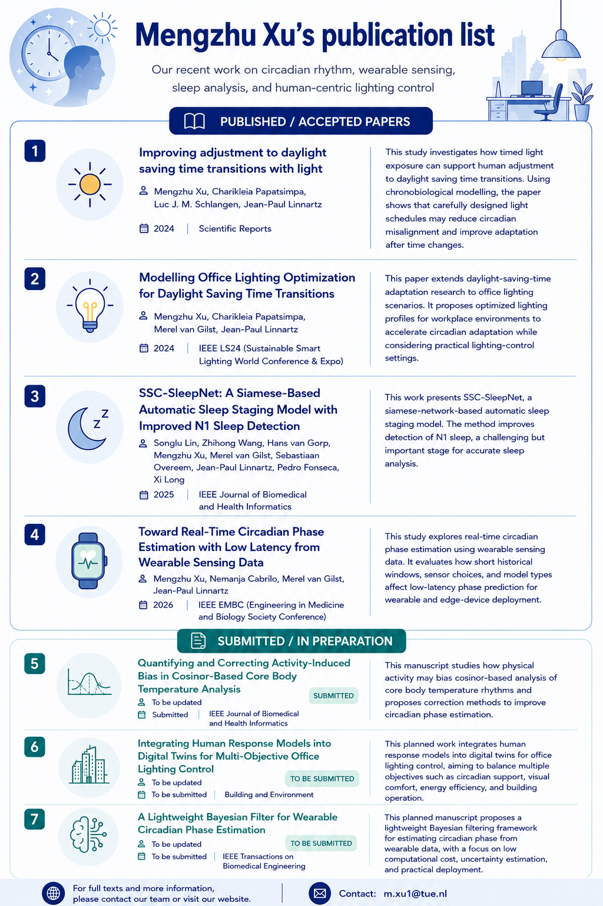

Recent publications on circadian rhythm modelling, light-based intervention, wearable sensing, sleep analysis, and human-centric lighting control.
This page presents our recent publications on circadian rhythm modelling, light-based intervention, wearable sensing, sleep analysis, and human-centric lighting control.

This study investigates how timed light exposure can support human adjustment to daylight saving time transitions. Using chronobiological modelling, the paper shows that carefully designed light schedules may reduce circadian misalignment and improve adaptation after time changes.
This paper extends daylight-saving-time adaptation research to office lighting scenarios. It proposes optimized lighting profiles for workplace environments to accelerate circadian adaptation while considering practical lighting-control settings.
This work presents SSC-SleepNet, a Siamese-network-based automatic sleep staging model. The method improves detection of N1 sleep, a challenging but important stage for accurate sleep analysis.
This study explores real-time circadian phase estimation using wearable sensing data. It evaluates how short historical windows, sensor choices, and model types affect low-latency phase prediction for wearable and edge-device deployment.
This manuscript studies how physical activity may bias cosinor-based analysis of core body temperature rhythms and proposes correction methods to improve circadian phase estimation.
This planned work integrates human response models into digital twins for office lighting control, aiming to balance multiple objectives such as circadian support, visual comfort, energy efficiency, and building operation.
This planned manuscript proposes a lightweight Bayesian filtering framework for estimating circadian phase from wearable data, with a focus on low computational cost, uncertainty estimation, and practical deployment.